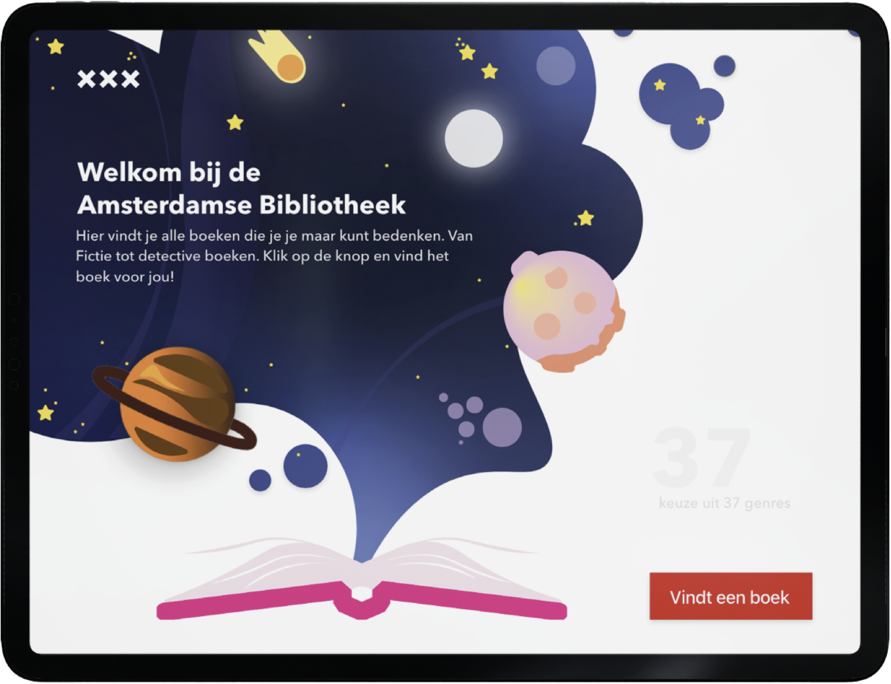
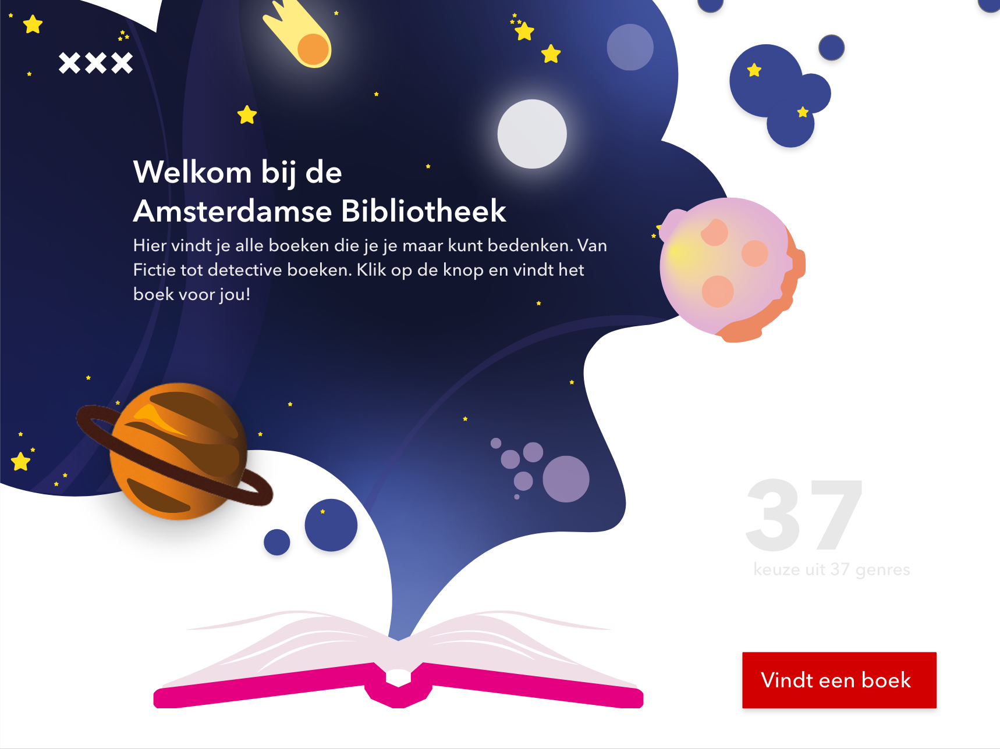
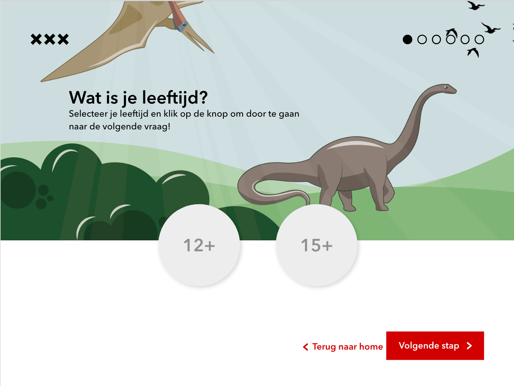
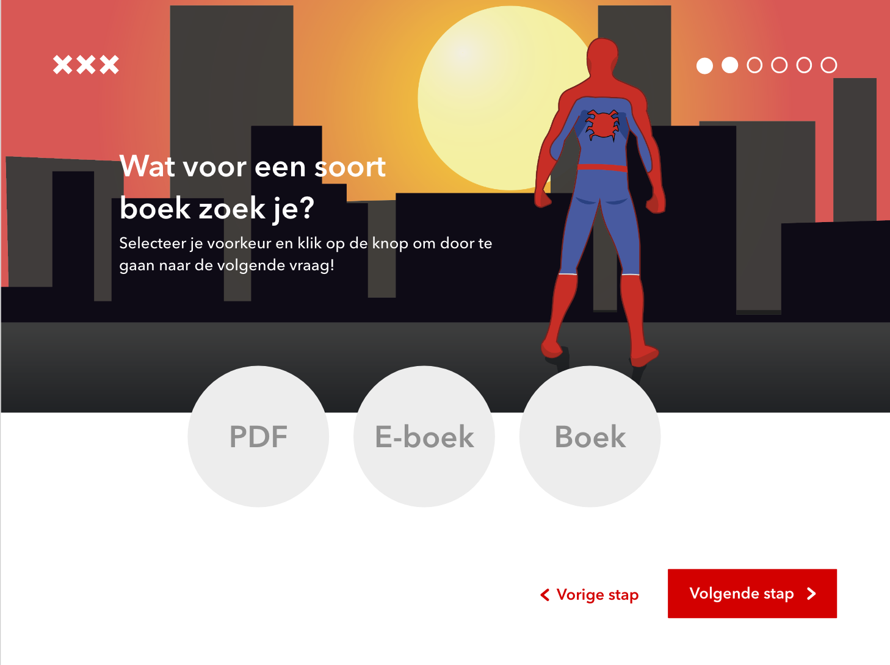
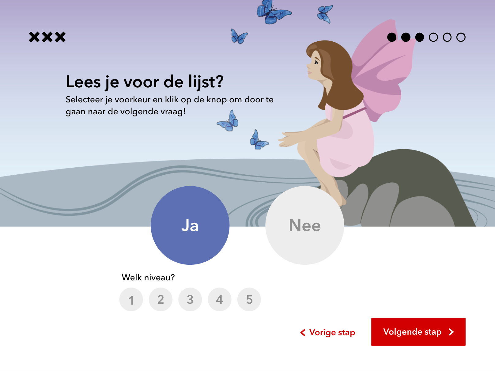
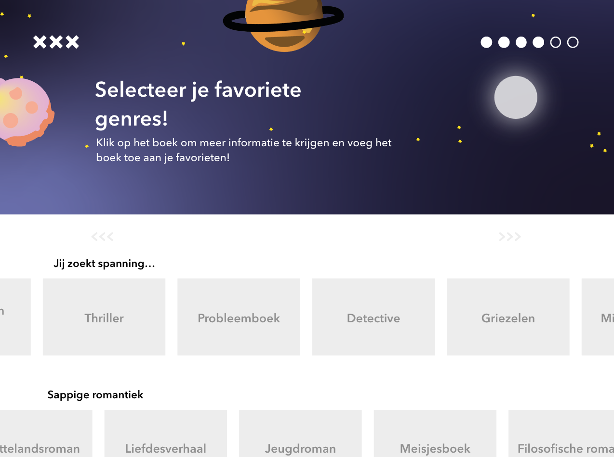
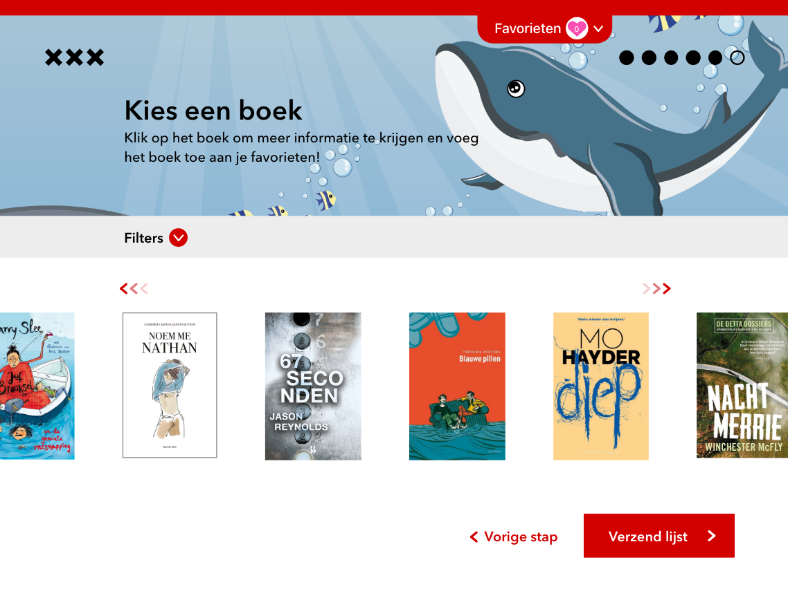
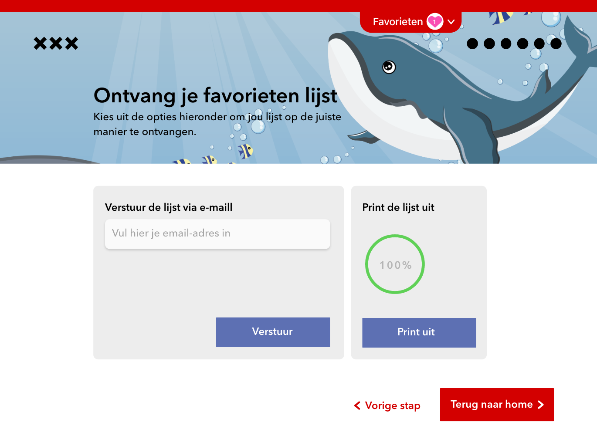

hidden
General information
04/06/2023
Subject: Visual Interface Design
Grade: 9,2
Used programmes: Adobe XD, Illustrator
Challenge
The Municipality of Amsterdam wants to promote reading among students. Come often students no longer go to the public library, so this is the only place they could go to come and read books is the school library. For this reason they are in the school library In addition to informative books, more and more novels can also be found. The City wants to help secondary school students find books to read easily and quickly in the school library. They want to do this with a kiosk setup: a tablet (iPad) that is fixed is located at the entrance to the library. This runs an app that helps the student read a book find one that suits him or her and indicates where he or she can find that book.
hidden
Results
Product features
Selfmade illustrations
Every illustration/animation (selfmade) is to make the process more attractive for the children
Principles of User Interface
One primary action per screen: applied by making one screen per step in the selecting process
Progressive disclosure: The design provides clarity and is organized by progressive disclosure as some options only appear when another option is chosen. This also makes it more fun for children.
Consistency: Every page has the same flow and layout to make it simpler to use
hidden
- 
- 
- 
- 
- 
- 
- 